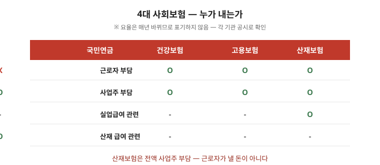

산재 승인은 끝이 아니라 시작입니다. 어떤 급여를 언제 신청하는지에 따라 실제 보상이 달라집니다. 이 글은 치료 기간 급여부터 장해·사망 급여, 회사 책임과의 관계까지 순서대로 정리한 안내입니다. 종류·요건은 사안에 따라 달라지므로 마지막 점검표까지 읽고 근로복지공단 상담과 전문가 검토를 받으세요.

한눈에 보는 표 — 급여 4묶음
| 시기 | 급여 | 포인트 |
|---|---|---|
| 치료 중 | 요양급여 + 휴업급여 (+간병 필요 시 간병급여) | 지정 의료기관 진료, 기간 단위 청구 |
| 치료 종결 후 | 장해급여 (일시금 또는 연금) | 종결 시점 상태 기준, 검사 자료가 기초 |
| 사망 시 | 유족급여 + 장의비 (+생활안정 지원 별도) | 유족 범위·순위 확인 |
| 회사 상대 | 민사 손해배상 (별도) | 안전조치 위반 입증 시 추가 다툼 |
1. 치료 기간에 받는 급여
- 요양급여는 치료에 드는 비용을 보상합니다. 지정된 의료기관에서 진료받는 방식이 기본입니다. 관련 글 산재신청 글의 서류 목록으로 접수하세요.
- 휴업급여는 치료 때문에 일을 하지 못한 기간의 소득을 보전합니다. 평균임금을 기준으로 계산하며, 청구는 기간 단위로 이뤄집니다.
- 간병이 필요한 상태라면 간병급여를 검토하세요. 치료 종결 후에도 간병이 필요한 경우가 대상이 됩니다.
2. 장해가 남았을 때 — 종결 시점이 기준
- 치료가 끝난 뒤에도 신체 기능에 장해가 남으면 장해급여를 청구합니다. 장해 상태에 따라 일시금 또는 연금으로 지급됩니다.
- 장해 판정은 치료 종결 시점의 상태를 기준으로 합니다. 진단서와 검사 자료가 판정의 기초가 되므로 종결 전 검사를 빠뜨리지 마세요.
- 판정 결과에 이견이 있으면 심사 청구 절차를 검토하세요. 결정문 받는 즉시 기한을 표시하세요.
3. 사망한 경우 — 유족급여와 장의비
- 업무상 사망이면 유족급여와 장의비가 지급됩니다. 유족의 범위와 순위가 법에 정해져 있습니다.
- 유족 보상과 함께 유족의 생활 안정을 위한 지원 제도가 별도로 운영됩니다. 공단 상담에서 함께 확인하세요.
4. 회사 책임과의 관계 — 산재와 민사는 별개
- 산재보험 급여를 받았다고 해서 회사의 민사상 손해배상 책임이 모두 사라지는 것은 아닙니다. 안전조치 의무 위반이 있었다면 별도로 다툴 수 있습니다.
- 산재 처리 과정에서 회사가 자료 제출을 미루면 신청이 늦어집니다. 요청한 자료와 요청 시점을 기록으로 남기세요.
자주 틀리는 3가지
- “산재 승인되면 전부 끝” — 급여별 신청이 따로 필요합니다.
- “회사 합의하면 산재 불필요” — 공상 합의는 장해·후유증에서 불리합니다.
- “산재 받으면 회사 상대 불가” — 안전위반이 있으면 민사 청구가 별도로 가능합니다.
현장 체크리스트
- □ 요양·휴업 신청을 했는가
- □ 종결 전 검사·진단서를 확보했는가
- □ 장해·유족 해당 여부를 확인했는가
- □ 결정문 기한을 표시했는가
- □ 회사 자료 요청 기록을 남겼는가
자주 묻는 질문
- Q. 치료 중 생활비가 없습니다. — A. 휴업급여를 기간 단위로 청구하세요. 청구 주기를 공단에 확인하세요.
- Q. 장해 판정이 낮게 나왔습니다. — A. 심사 청구 절차가 있습니다. 결정문 이유부터 분석하세요.
- Q. 회사가 자료를 안 줍니다. — A. 요청 일시·내용을 기록하고 공단에 알리세요.
- Q. 합의서가 있습니다. — A. 서명 전 상담이 필요합니다. 서명 후 번복은 어렵습니다.
근거와 원문
이 글은 2026-09-19 기준 일반 안내입니다. 급여 종류와 요건은 개별 사안에 따라 달라지므로 근로복지공단 상담과 전문가 검토를 권합니다. 법률·의학적 판단이 아닙니다.